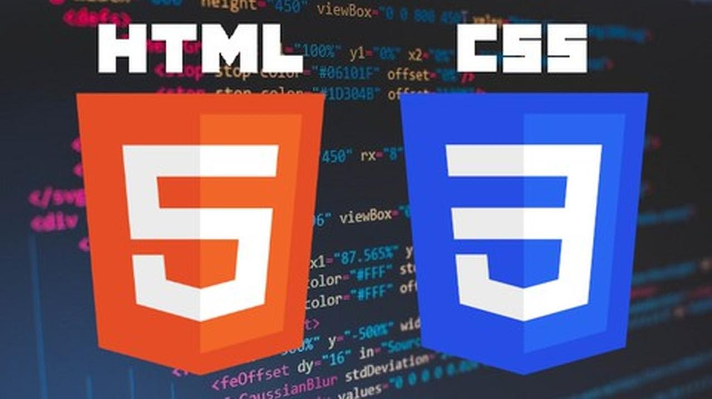

Els objectius d'aquest repte són:
- El lloc web haurà de tenir diverses pàgines.
- El pressupost que vàreu implementar al "Repte 2 - Disseny i implementació de la infraestructura física i lògica", caldrà implementar-ho en una taula HTML, no com a imatge.
- Cada pàgina del lloc web inclourà el menú i es podrà accedir a totes les pàgines.
- Tota la documentació del projecte s'ha d'incloure al llo web.
- La web ha d'incloure com a mínim un vídeo. Ha de ser fàcil lectura i visual, inclougueu elements gràfics.
- L'estil de totes les pàgines ha de ser uniforme, a través d'un únic fitxer CSS per a tot el lloc web.
Recordeu que podeu personalitzar estils d'elements concrets o de grups d'elements fent ús de les ID i les CLASS.

S'ha d'incloure un formulari on els usuaris puguin introduir peticions d'infraestructures.
El formulari no ha de desar les dades, només s'ha d'implementar la pàgina web i ha de contenir, com a mínim, els següents camps:
Dades personals de l'usuari (nom, cognoms).
Dades de contacte (telèfon, correu electrònic).
Número d'ordinadors que el client vol incloure.
Si la connexió serà per cable, wi-fi o ambdues.
Número de sales que es faran servir a la instal·lació (un màxim de 10 sales). La selecció s'ha de fer amb un camp desplegable.
Text lliure de comentaris addicionals.
Cal seleccionar el tipus de camp més adient per a recollir cadascuna de les dades anteriors i aplicar les restriccions indicades. Tots els camps indicats a excepció de l'últim han de ser obligatoris.